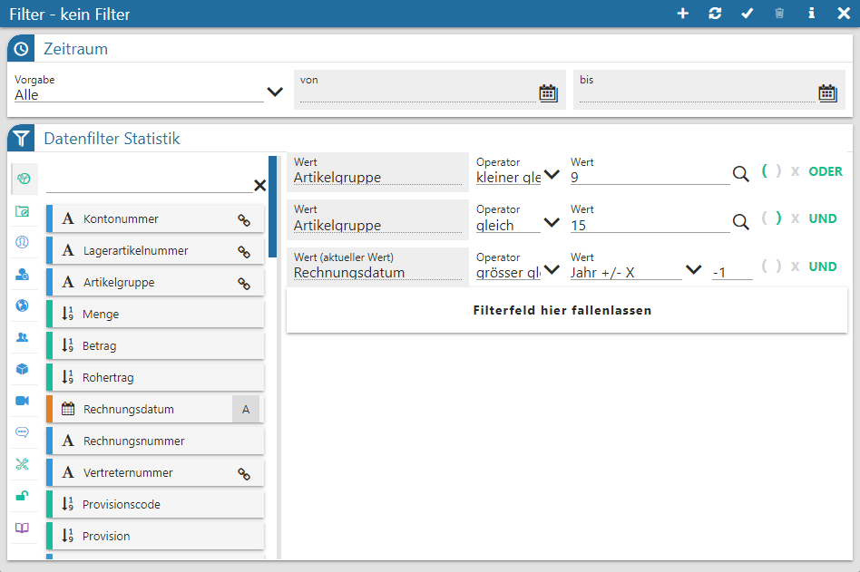
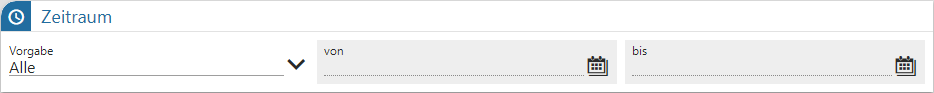
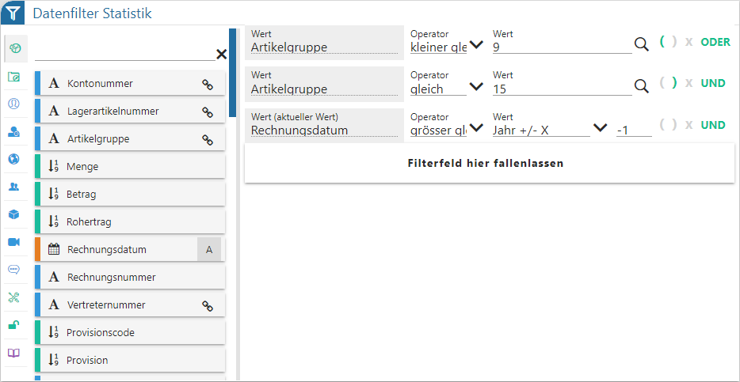
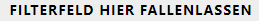
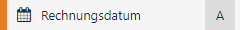
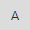
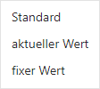
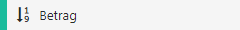
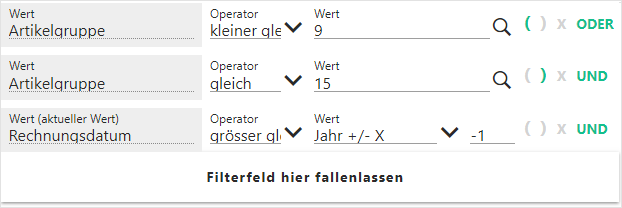
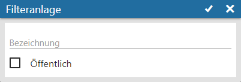

Mit Hilfe des View 360 Filters kann die View pro Objektgruppe nach frei definierbaren Kriterien eingeschränkt werden.

Zeitraum

Ø Vorgabe
Mit Hilfe der Auswahl "Vorgabe" kann der Zeitraum ausgewählt werden, in welchem die Bewegungsdaten der View 360-Analyse liegen sollen. Folgende Einstellungen stehen zur Verfügung, wobei eine Vorbelegung aufgrund der View 360 - Einstellungen stattfinden:
ü Heute
ü aktuelle Woche
ü letzte 7 Tage
ü letzte 14 Tage
ü aktueller Monat
ü 1. Quartal
ü 2. Quartal
ü 3. Quartal
ü 4. Quartal
ü aktuelles Jahr
ü Vorjahr
ü Alle
ü Individuell (Datum kann manuell hinterlegt werden)
Hinweis
Folgende Datumsfelder werden bei dieser Selektion berücksichtigt:
ü Statistik => Rechnungsdatum (T039.C006)
ü Belege => Datum der Erstanlage (T025.C059)
ü Archiv => Erstellungsdatum (T496CMP.C003)
ü CRM => Datum Schritt geschrieben (T170.C005)
Datenfilter

Ø Objektauswahl
Im linken Bereich des Filters kann zunächst der Objekttyp gewählt werden. Anhand des Typs wird die Tabelle "Datenfelder" gefüllt und im Filterbereich die aktuelle Filterung angezeigt.
Hinweis
Über einen Filter können parallel für unterschiedliche Objekttypen Filterungen angelegt werden. Eine Übersicht aller Selektionskriterien kann durch Anwahl des Buttons "Filterübersicht" ausgegeben werden.
Ø Tabelle "Datenfelder" (hier "Statistik")
In dieser Tabelle werden alle Felder des Objekts (z.B. der Statistik oder des Archivs) dargestellt, welche per Drag & Drop in den Filterbereich übergeben werden können (Drop auf das Feld

). Die View 360 unterscheidet hierbei nach den folgenden Datentypen:
ü - Alphanumerisch
Es handelt sich um ein
Feld mit alphanumerischen Inhalt.
ü - Text
Es handelt sich um ein Feld mit
Langtext.
ü

- Datum
, welches sich neben der Beschreibung des Felds befindet. Hierdurch öffnet sich das folgende Auswahlmenü (Standard = Eingabe des Datums; aktueller Wert = vordefinierte Bereiche; fixer Wert = fixe Vorbelegung):
ü

- Zahl (Measure)Hinweis
Mit Hilfe der Suchzeile kann über eine Volltextsuche nach Datenfeldern gesucht werden, wobei das %-Zeichen als Platzhalter verwendet werden kann.
Filterbereich

In diesem Bereich werden alle Selektionskriterien aufgeführt. Eine Änderung der Reihenfolge ist per Drag & Drop (Drag auf die Überschrift "Wert", "Operator" oder "Wert") möglich.
Ø Wert
In dieser Spalte wird der Name des Datenfelds angezeigt.
Hinweis
Bei Feldern des Typs "Datum" kann man über die Überschrift unterscheiden, ob es sich um eine klassische Eingabe eines Datums (Text lautet "Wert"), um die Auswahl einer Vorgabe (Text lautet "Wert (aktueller Wert)") oder um Angabe eines festen Zeitpunkts ("Wert (fixer Wert)") handelt.
Ø Operator
An dieser Stelle kann der Operator hinterlegt werden, wobei dieser Abhängig vom Datentyp des Felds ist. Die Operatoren "IN" und "NOT IN" stehen nicht zur Verfügung.
Ø Wert
In der dritten Spalte wird der Suchbegriff hinterlegt, wobei in vielen Fällen ein Matchcode zur Verfügung steht.
Hinweis
Bei Felder des Typs "Datum" mit der Einstellung "aktueller Wert" werden unterschiedliche Zeitpunkte angeboten, wobei die Ausgangsbasis immer "heute" ist. Eine Besonderheit stellen die Vorgaben mit "+ / - X" da. Bei diesen kann über eine weitere Eingabe der Zeitpunkt dynamisch verschoben werden.
Beispiel
Es ist der 13.07.2025.
ü Woche +/- X "2" mit Operator "gleich" => 21.07.2025 bis einschließlich 27.07.2025
ü Woche +/- X "2" mit Operator "größer" => größer dem 28.07.2025
ü Woche +/- X "2" mit Operator "größer gleich" => größer dem 21.07.2025
ü Woche +/- X "2" mit Operator "kleiner" => kleiner dem 22.07.2025
ü Woche +/- X "2" mit Operator "kleiner gleich" => kleiner dem 28.07.2025
ü Monat +/- X "3" => Oktober
ü Jahr +/- X "-1" => 2024
ü Quartal +/- "0" => 3. Quartal
Ø Klammer
Durch Anwahl der Icons kann eine Klammerbildung gestartet bzw. geschlossen werden. Aktive Klammern werden farbig dargestellt ( bzw. ).
Ø Verknüpfung
Über die Spalte "Verknüpfung" kann entschieden werden, wie die einzelnen Selektionskriterien miteinander verknüpft werden sollen. Hierfür stehen die folgenden Varianten zur Verfügung (per Mausklick änderbar):
ü UND
Wenn die Bedingungen mit
"UND" verknüpft werden, dann müssen beide Selektionskriterien zutreffen, damit
der Datensatz in der View 360 berücksichtigt wird.
ü ODER
Wenn die Bedingungen mit
"ODER" verknüpft werden, dann muss eines der Kriterien zutreffen, egal wie viele
Kriterien hinterlegt wurden.
Buttons
Ø neuer Filter
Durch Anwahl dieses Buttons wird das Fenster "Filteranlage" geöffnet. Über dieses kann ein neuer Filter erzeugt werden.

Folgende Felder stehen in dem Fenster zur Verfügung:
ü Bezeichnung
An dieser Stelle
kann der Name des Filters hinterlegt werden.
ü Öffentlich
Durch Aktivierung
der Option "Öffentlich" steht der Filter allen Benutzer zur Verfügung. Solche
Filter können nur vom Ersteller bearbeitet werden.
Hinweis
Damit private und öffentliche Filter unterschieden werden können, wird der Name bei
Ø Aktualisieren
Mit Hilfe dieses Buttons wird der Filter gespeichert, direkt angewendet und das Fenster bleibt geöffnet.
Ø Speichern
Durch Anwahl des Buttons "Speichern" bzw. der Taste F5 werden die Filtereinstellungen angewendet und das Fenster geschlossen.
Ø Löschen
Mit Hilfe des Buttons "Löschen" kann der aktuelle Filter gelöscht werden.
Ø Filterübersicht
Mit Hilfe dieses Buttons wird eine Übersicht aller Filterungen, untergliedert nach den einzelnen Typen, am Bildschirm ausgegeben.
Ø Ende
Durch Anwahl des Buttons "Ende" bzw. der Taste ESC wird das Fenster geschlossen und nicht gespeicherte Änderungen verworfen.